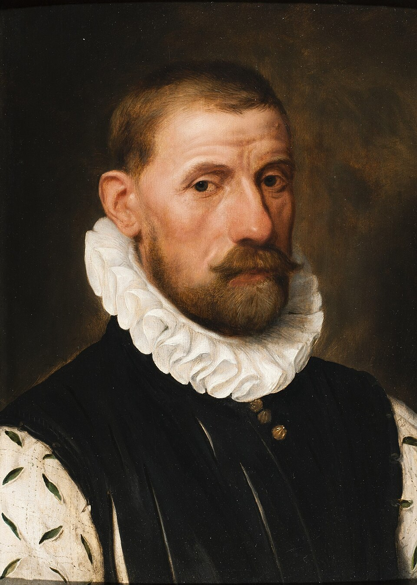
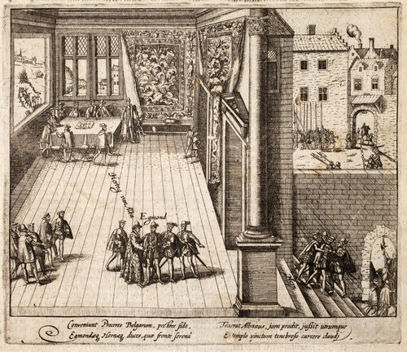
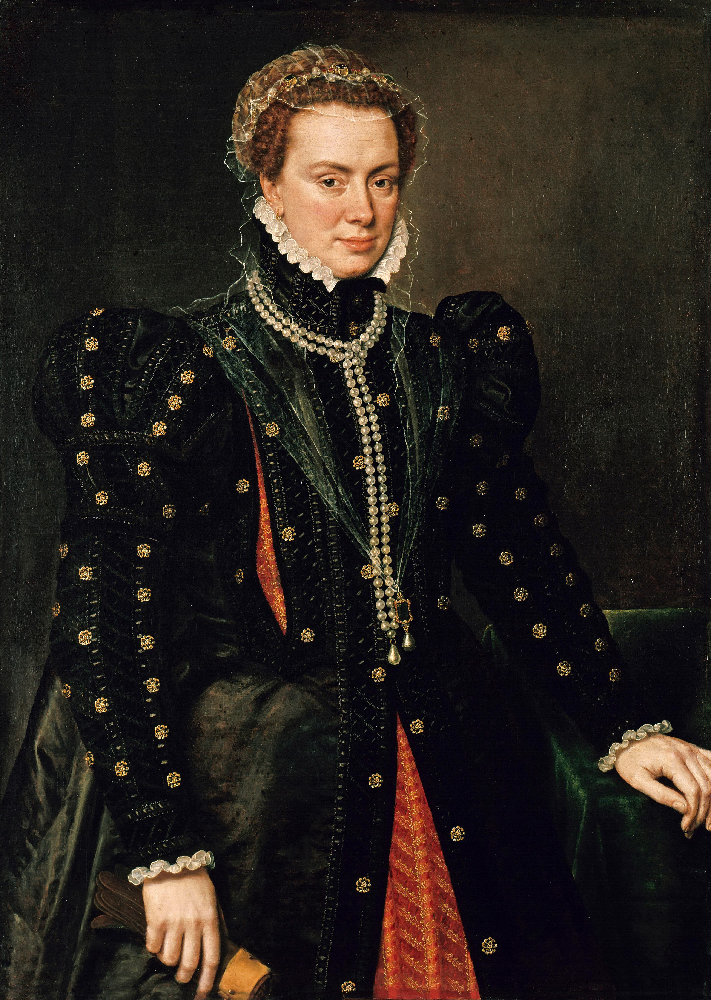
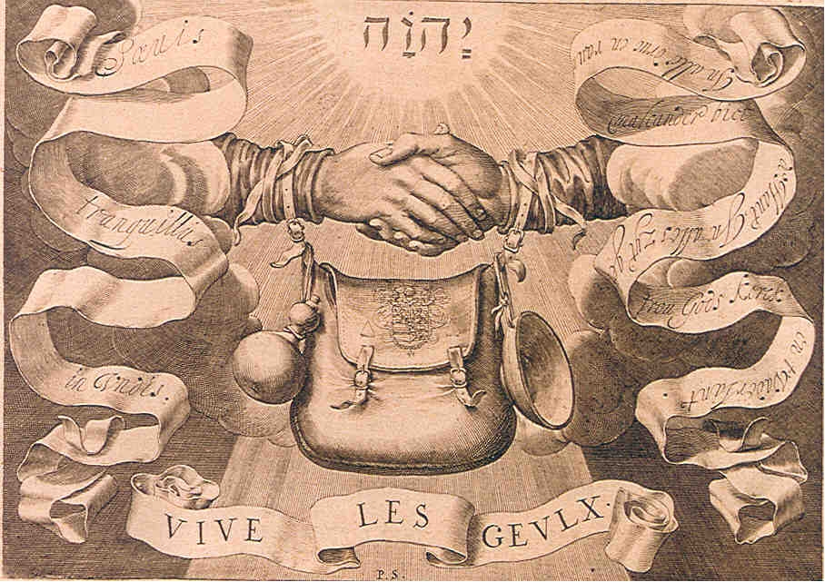
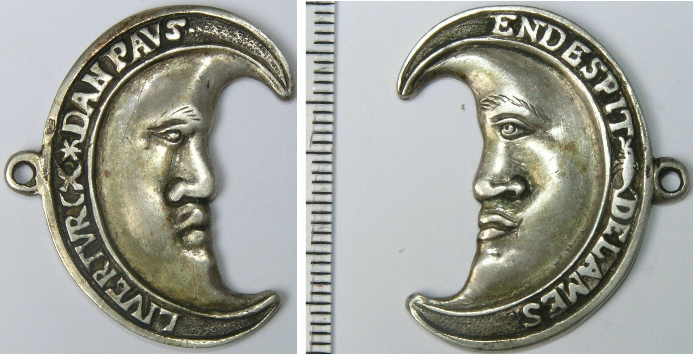
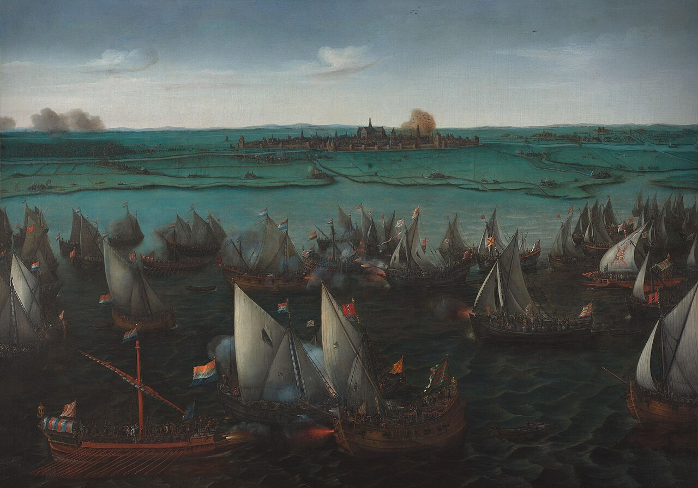
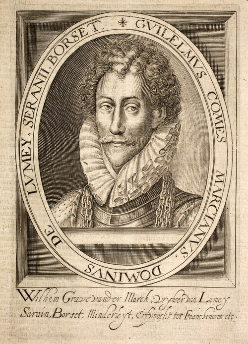
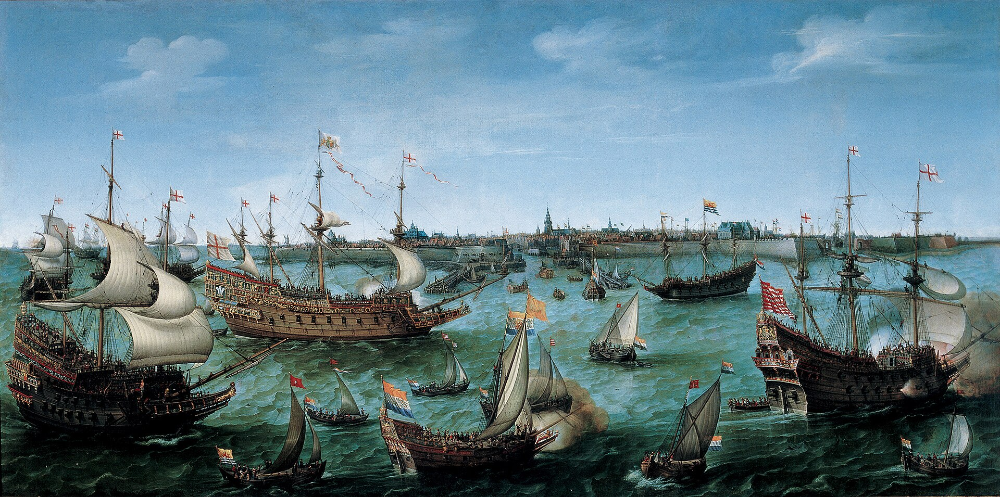

벨기에 이야기 (4) - 저지대의 개방(丐幫)
게시: 2026-08-03T06:30:03+09:00
알바 공작의 '10분의 1세(Tiende Penning)' 때문에 저지대 전역에서는 반스페인 감정이 들끓었습니다만, 온갖 소극적 저항이 난무하는 가운데에도 무장봉기는 쉽게 일어나지 않았습니다. 전편에서 언급했듯이, 1568년 빌렘 오라녜의 반군이 저지대 침공을 시도해보았으나 그들 대부분은 독일 등지에서 모집한 용병에 불과했고, 아니나 다를까 이들은 알바 공작의 강력한 테르시오 부대에게 대번에 박살이 나서 흩어져버렸습니다. 왜 저지대 사람들은 무장봉기에 소극적이었을까요? 가장 큰 이유는 저지대의 돈줄을 꽉 쥐고 있던 암스테르담이나 안트베르펜 등 저지대 대도시들의 지배층이 모두 철저한 친스페인파였기 때문이었습니다. 저지대가 반란에 휘말린 계기는 분명히 필리페 2세의 가혹한 신교 탄압 때문이긴 했습니다. 그러나 당시 저지대 사람들이 다 신교도였던 것이 아니었고, 귀족들과 상인들 중에서도 카톨릭이 매우 많았습니다. 가령 네덜란드 독립의 중심축이었던 빌럼 오라녜는 1568년 공공연한 무장 반란에 돌입한 이후에도 계속 카톨릭 신자였고, 훨씬 이후인 1573년에야 칼뱅파 신교로 개종했습니다. 훗날 네덜란드와 벨기에가 찢어지게 된 원인 중 하나가 네덜란드는 신교, 벨기에는 카톨릭이라는 배경이긴 했지만, 오늘날 벨기에인 안트베르펜은 신교도들의 거점 도시였으며, 반대로 오늘날 네덜란드인 암스테르담의 지배층은 대부분 카톨릭이었습니다. 또, 알바 공작이 부임하자마자 처형해버린 두 저지대 귀족 라모랄 에흐몬트(Lamoraal van Egmont) 백작과 필립 드 몽모랑시 호른(Filips van Montmorency, graaf van Horn) 백작은 모두 카톨릭이었습니다. 그러니까 저지대 반란의 근본 원인은 신구교 간의 종교 분쟁이 아니라 저지대의 자치권 확대 요구와 증세에 대한 저항이었습니다.

(라모랄 에흐몬트 백작입니다. 그는 플랑드르 귀족이지만 스페인에 대한 충신으로서, 프랑스와의 전쟁에서 스페인군으로 참전하여 승리로 이끈 뛰어난 군인이기도 했습니다. 다만 그는 플랑드르인으로서 펠리페 2세의 개신교 탄압과 세금 부과 등에 항의했으나, 어디까지나 국왕에 대한 충성을 버리지 않고 평화적인 해결을 모색했습니다. 하지만 그런 유화책에 대한 충언이 반역에 해당한다며 분노한 펠리페 2세와 알바 공작에 의해 1567년 체포되어 친구 호른 백작과 함께 1568년 브뤼셀 광장에서 공개 처형당했습니다. 그의 죽음은 저지대 독립전쟁의 결정적 촉매가 되었습니다. 저지대 사람들이 '펠리페 2세는 저지대 사람이라면 카톨릭 충신마저도 처형한다'라며 경악했기 때문입니다.)

(에흐몬트 백작과 호른 백작이 체포되는 광경을 묘사한 그림입니다. 그들은 알바 공작의 식사 초대를 받고 식사를 하다가 도중에 체포되어 끌려 나갔습니다. 사실 알바 공작이 진짜 처형하고 싶었던 것은 빌럼 오라녜인데, 빌럼 오라녜는 알바 공작을 피해 일찌감치 외국으로 도피했고, 저 두 사람은 '우리는 지은 죄가 없는데 왜 도망쳐야 하느냐'라며 태연하게 있다가 저런 변을 당했습니다.) 아무튼 모든 저지대 사람들이 싫어하던 자치권 침해와 증세를 강요하던 스페인에 대한 무장봉기가 왜 그리 지지부진했을까요? 역시 돈 때문이었습니다. 암스테르담이든 안트베르펜이든 주요 돈벌이는 스페인 본국과 중북부 유럽을 잇는 무역이었습니다. 만약 이런 항구 도시들이 공공연하게 무장 반란에 참전한다면 스페인 본국뿐만 아니라 남아메리카를 포함한 광범위한 스페인 제국 영토가 이들의 시장에서 사라지는 셈이었고, 이는 항구 도시의 몰락을 뜻하는 것이었습니다. 인간의 돈 욕심은 애국심은 물론 경건한 신앙심에도 앞서는 법입니다. 물론 무장 봉기에 들어간다고 반드시 승리한다는 보장이 없다는 점도 큰 이유였습니다. 누가 뭐래도 스페인은 당시 유럽 최강의 군사력을 갖춘 초강대국이었으니까요. 그런데 이렇게 저지대 전체가 감히 무장 봉기에 나서지 못하고 쭈삣거리는 상황에서도, 스페인에 대해 무장 반란을 일으킨 세력이 있긴 했습니다. 이들은 스스로를 '거지'(geuzen, 회전)이라고 불렀습니다. 무협지에 나오는 개방(丐幫)이 저지대에도 있었던 것일까요? 그건 아니고, 이 거지라는 집단은 실은 자치파 귀족들을 주축으로 하는 반란 세력이었습니다. 이름이 왜 거지인가 하는 것에는 인상적인 일화가 있습니다. 아직 반란이 본격화되기 이전인 1566년, 약 250명의 저지대 귀족들이 스페인의 강압 통치에 대한 불만을 청원하기 위해 선왕 카를로스 5세의 딸이자 당시 저지대 총독이던 파르마 공작부인 마게리타(Margherita di Parma)에게 몰려가는 일이 발생했습니다. 당시만 해도 저지대와 스페인의 관계가 최악의 상황은 아니었기 때문에 마게리타에게는 소수의 호위병 이외에는 아무 병력이 없었습니다. 그런 상황에서 수백 명의 귀족들이 떼로 몰려오자 겁을 먹은 마게리타를 독려하기 위해, 고문으로 있던 베를레이몽(Berlaymont)이 당시 저지대 지배층의 언어이던 불어로 이렇게 말했다고 전해집니다. "두려워 마십시요, 부인. 저들은 그저 거지떼에 불과합니다." (N'ayez pas peur Madame, ce ne sont que des gueux.)

(파르마 공작부인 마게리타입니다. 남동생인 펠리페 2세는 일부러 병력은 커녕 아무 실권을 주지 않은 채 마게리타를 총독으로 임명했기 때문에, 마게리타가 발휘할 수 있는 통치력은 사실상 아무것도 없었습니다. 그러나 그녀도 아버지 카를로스 5세처럼 저지대에서 태어나 어린 시적을 보냈으므로 저지대에 대한 이해도는 누구보다 뛰어나서, 남동생에게 알바 공작 같은 사람을 보내 철권 통치를 휘두르는 것은 상황을 악화시킬 뿐이라고 충언했습니다만 소귀에 경 읽기였습니다.) 불어로 거지들이 gueux이고 네덜란드어로는 guezen인데, 이런 모욕을 받은 저지대 귀족들은 이 모욕을 기념하여 스스로를 (불어가 아니라 네덜란드어로) 거지들이라고 불렀을 뿐만 아니라 아예 거지를 상징하는 문장과 장식품도 만들었고, 결국 이들은 무장 봉기에 나섰습니다. 하지만 스스로를 개방이라고 부르든 화산파라고 부르든 실력은 이름과는 무관한 것이었습니다. 저지대 주요 도시들의 적극적 참여를 끌어내지 못한 이들은 결국 체포영장이 떨어진 범죄자 신세가 되어 영국이나 독일, 프랑스 등으로 흩어진 망명객 신세가 되었습니다.

('거지들'의 엠블럼입니다. 지갑과 함께 거지들의 밥그릇과 호리병이 매달려 있습니다.)

(1570년대에 만들어진 이 장식 메달도 '거지들'의 상징물로서, 여기엔 'LIVER TVRCX DAN PAVS' 라고 새겨져 있는데, '교황파 하느니 투르크파를 하겠다' 정도의 뜻입니다. 원래 거지들은 야밤에 활동하는 특성상 보름달을 상징으로 했었는데, 스페인의 적인 오스만 투르크의 원조 협약을 추진하면서 오스만 투르크의 상징인 초승달을 채택했다고 합니다.) 하지만 여기서 거지들의 진화가 일어납니다. 거지가 이젠 바다 거지(Watergeuzen, 바터르회전)가 된 것입니다. 즉, 거지 세력 중 일부는 살 길이 막막해지자 배를 타고 바다에서 해적질을 시작하여 주로 스페인 무역선을 강탈했습니다. 이것이 신의 한 수였습니다. 스페인은 지상전에서는 테르시오를 앞세운 최강의 군사력을 가졌지만, 무적함대의 신화와는 달리 실제로는 영국 해적들에게 자주 털리는 등 바다에서는 그다지 인상적인 모습을 보여주지 못했기 때문입니다. 게다가, 지상군은 존재 그 자체만으로도 끊임없이 비용이 들어가는 돈 먹는 하마에 불과했지만, 해적질은 초기 투자비가 좀 들어가긴 해도 스페인 무역선을 한 번만 제대로 털면 그 비용을 다 충당하고도 남을 정도로 짭짤한 돈벌이가 되었던 것입니다. 지상전에서 참패를 맛보고 와신상담하던 빌럼 오라녜에게도 그 사실이 곧 알려졌습니다. 빌럼이 그들에게 아예 정규 사략선(privateer) 면허장(letter of marque)를 주면서, 바다 거지들은 더욱 왕성하게 활동하게 됩니다.

(바다 거지들이 뭔가 특정한 형태의 선박을 사용했느냐 하면 꼭 그렇지는 않습니다. 지역과 필요에 따라 그때그때 알맞는 형태의 선박을 사용했습니다. 이 그림은 1573년 벌어진 하를레메르메이르(Haarlemmermeer) 전투인데, 이 하를레메르메이르는 바다가 아니라 라인강을 하구의 저지대 특성상 많았던 큰 호수입니다. 여기서 바다 거지들은 물론 스페인군도 보시다시피 삼각돛과 노를 이용한 소형 평저선을 사용했습니다. 이 전투에서는 바다 거지들이 판정패를 당하고 후퇴했습니다. 저 호수는 19세기에 물을 퍼내고 네덜란드 특유의 해수면 보다 낮은 간척지를 만들었습니다.) 그러나 그런 바다 거지들에게도 곧 철퇴가 떨어지게 됩니다. 스페인 필리페 2세의 신하들도 두뇌를 가진 사람들이다 보니, 바다 거지들을 부족한 해군력으로 소탕하기보다는 그 근거지를 압박하는 방법을 쓰기로 했고, 그 수가 제대로 먹힌 것입니다. 바다 거지라고 해도 보급 기지는 있어야 했는데, 모든 저지대 항구도시들은 스페인에게 충성하고 있었으므로 바다 거지들은 주로 영국 항구를 기지로 사용하며 활동했습니다. 스페인이 사용한 방법은 영국에 대한 외교 압박이었습니다. 영국도 1572년부터 드레이크를 앞세워 스페인에 대한 본격적 해적 행위를 하고 있어서 스페인에 대해 좀 캥기는 바가 있던 터였는데, 스페인이 정색을 하고 바다 거지들에 대한 단속을 요구하며 영국 침공까지 거론하자, 영국도 부담을 느끼지 않을 수 없었습니다. 결국 엘리자베스 1세는 바다 거지들에 대해 영국내 항구에 대한 기항 및 보급품 판매를 모두 금지시켰습니다. 보급품 확보는 물론 노획물을 처분할 시장까지 상실한 것은 바다 거지들에게는 심각한 타격이었습니다. 영국 항구에서 쫓겨나 진짜 거지가 된 바다 거지 함대는 약 25척으로서, 여기에는 약 600명의 선원들이 타고 있었습니다. 이들 대부분은 독립에 대한 열의에 불타는 애국지사들이 아니라 그냥 노획물을 바라고 탑승한 거친 외국 뱃사람들이었습니다. 무작정 바다 위를 헤메다 보니 이들은 거의 식량이 떨어질 위기에 처했고, 특히 정기적으로 배급되어야 하는 술이 바닥을 보이자 선원들의 반란 기세가 역력해졌습니다. 뭐가 어떻게 되든 당장 무언가는 해야 했습니다. 이 거지 함대의 총지휘자는 뤼메이(Lumey) 남작 판 데르 마르크(Willem II van der Marck)였는데, 판 데르 마르크도 사실 어디로 가야 할지 전혀 대책이 없었습니다. 일설에 따르면 판 데어 마르크는 그나마 빌럼 오라녜의 지지 세력이 좀 있고 전략적 위치가 좋은 꽤 큰 항구였던 블리싱언(Vlissingen, 영어로는 Flushing)으로 가려고 했다고 합니다. 그러나 재수가 없으면 뒤로 엎어져도 코가 깨진다고, 역풍이 부는 바람에 거지 함대는 엉뚱한 곳으로 흘러가버렸습니다. 그런데, 그 역풍이 아마도 신교의 하나님이 불어주신 것이었나 봅니다. 그렇게 뜻하지 않게 밀려간 곳에서 판 데르 마르크는 역사를 새로 쓰게 됩니다.

(뤼메이 남작 판 데르 마르크입니다. 다음 편에서 더 자세히 소개할 기회가 있겠지만, 그는 매우 기괴한 인물이라고 할 수 있습니다.)

(블리싱언은 스헬더(Schelde) 강 어구라는 매우 중요한 위치에 자리 잡은 항구로서, 저지대 역사 내내 매우 중요한 역할을 했습니다. 이 그림은 1613년 영국 공주 엘리자베스 스튜어트와 결혼한 뒤 하이델베르크(Heidelberg)로 돌아가기 위해 먼저 블리싱언으로 입항하는 팔츠(Pfalz) 선제후 프리드리히 5세(Friedrich V)를 태운 영국 군함의 모습입니다. 당시는 아직 네덜란드 독립전쟁이 한창이던 시절이고, 저 부부는 하이델베르크로 가기 전에 먼저 헤이그에 들러 저지대 독립군의 마우리츠 오라녜(Maurits van Oranje)를 예방했습니다.) Source : https://en.wikipedia.org/wiki/Geuzen https://en.wikipedia.org/wiki/La_Rochelle https://en.wikipedia.org/wiki/Margaret_of_Parma https://en.wikipedia.org/wiki/Capture_of_Brielle https://en.wikipedia.org/wiki/Battle_on_the_Zuiderzee https://en.wikipedia.org/wiki/Siege_of_Leiden https://en.wikipedia.org/wiki/William_II_de_La_Marck https://en.wikipedia.org/wiki/Vlissingen